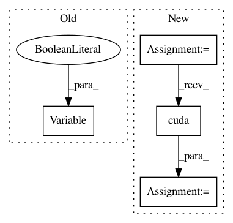

031392ff2cbb5703558d17a676a456521f754190,mnist/main.py,,train,#Any#,67
Before Change
batch_data_t = batch_data_t.cuda()
batch_targets_t = batch_targets_t.cuda()
batch_data = Variable(batch_data_t, requires_grad=False)
batch_targets = Variable(batch_targets_t, requires_grad=False)
for i in range(0, training_data.size(0), BATCH_SIZE):
optimizer.zero_grad()
batch_data.data[:] = training_data[i:i+BATCH_SIZE]
batch_targets.data[:] = training_labels[i:i+BATCH_SIZE]
After Change
batch_data = torch.FloatTensor(opt.batchSize, 1, 28, 28)
batch_targets = torch.LongTensor(opt.batchSize)
if cuda:
batch_data, batch_targets = batch_data.cuda(), batch_targets.cuda()
// create autograd Variables over these buffers
batch_data, batch_targets = Variable(batch_data), Variable(batch_targets)
In pattern: SUPERPATTERN
Frequency: 3
Non-data size: 4
Instances
Project Name: OpenNMT/OpenNMT-py
Commit Name: 031392ff2cbb5703558d17a676a456521f754190
Time: 2016-12-15
Author: soumith@fb.com
File Name: mnist/main.py
Class Name:
Method Name: train
Project Name: OpenNMT/OpenNMT-py
Commit Name: 960518e2734a42f7da19dc3d4d49501004c037e1
Time: 2016-09-25
Author: cfarabet@twitter.com
File Name: mnist/main.py
Class Name:
Method Name: train
Project Name: OpenNMT/OpenNMT-py
Commit Name: 960518e2734a42f7da19dc3d4d49501004c037e1
Time: 2016-09-25
Author: cfarabet@twitter.com
File Name: mnist/main.py
Class Name:
Method Name: test